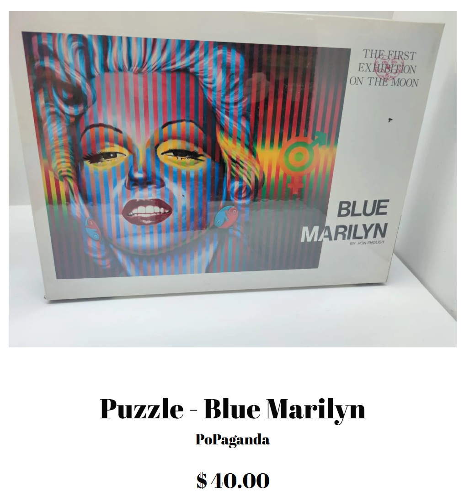

Exhibitions
Ron English – New Paintings, The Art Store, New York, New York, US, May 5–June 2, 1990.
Literature
Ron English, Popaganda: The Art & Subversion of Ron English (San Francisco: Last Gasp, 2001), p. 77. ISBN 1-887128-60-3.
Notes
In Popaganda, the size was mistakenly reported as 60 × 78 inches.
This composition was later reproduced as a jigsaw puzzle issued through PoPaganda. See the related puzzle on PoPaganda.
This work references Marilyn Monroe.

Ancillary Documentation
